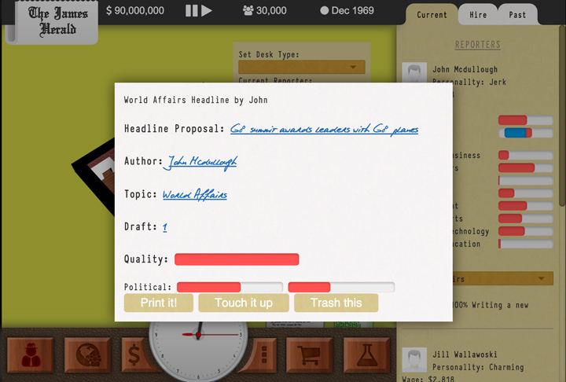

January 3 2015 | newstycoon.com | Issue 00001
$1.50
News paper simulation
game in the works!
News Paper Tycoon is a sophisticated management game where you own a small independent news paper, you will have to take your news paper to new heights and develop it into a massively syndicated national newspaper. How will you get there?
Hire reporters & editors
Try to hire the best and the brightest to work for you, your going to need the best you can afford to make the best content. However, just because you have managed to hire them don't get too comfortable, reporters will always aim for a higher salary, better work conditions and editorial freedom. Even if you manage to satisfy them, the dynamic events director could take it all away with the blink of on eye. Reporters can get into accidents, develop substance addition problems, get into trouble with local police or even get assassinated if they get too close to breaking a huge shady story.
User Generated Headlines
Your paper will feel almost real, your reporters will constantly pitch headline titles to you the editor, these headlines are populated from a large database of user submitted headlines. You will never see the same headline twice!
Choose the kind of paper you want to run
Your paper is your paper, you could make it a leftist handbook, a right wing propaganda pamphlet, a low brow tabloid or you could just walk the line down the middle as you will also be asked to fulfil the needs of your audience, advertisers, local business and even politicians or the government. You even get to control the look of your paper, what fonts to use, layout and even the paper it should be printed on.
"GAME OF THE YEAR ALL YEARS!" - A guy who gets paid to play games
Mange your time and office
Control every aspect of your paper and office, what to write and what to write it on. Manage your office correctly as the larger your staff and paper grow so will the needs of your staff, everything you place in your office will have positive and negative effects.
Adapt with the times
As you develop your paper you will have to roll with the times and try to stay on top of the curve or risk being edged out by your competitors, from the dawn of modern journalism to the start of the digital age you will have to make some tough decisions.
Manage every aspect of your newspaper.
Take the role of editor and review all potental headlines that are submitted

Dumb ways to die Metro